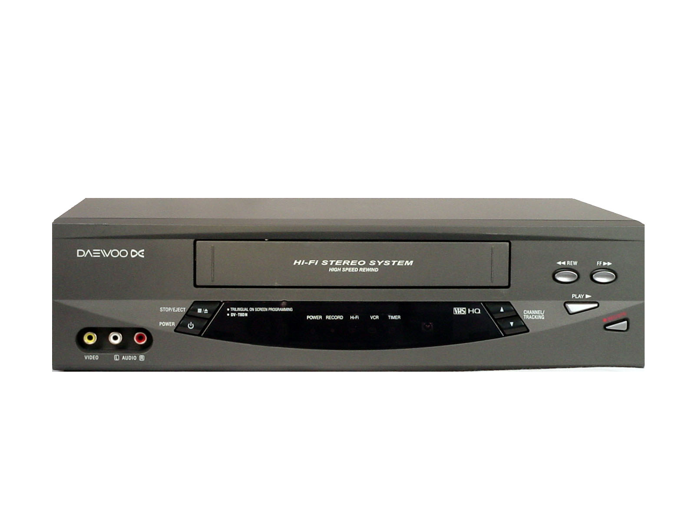
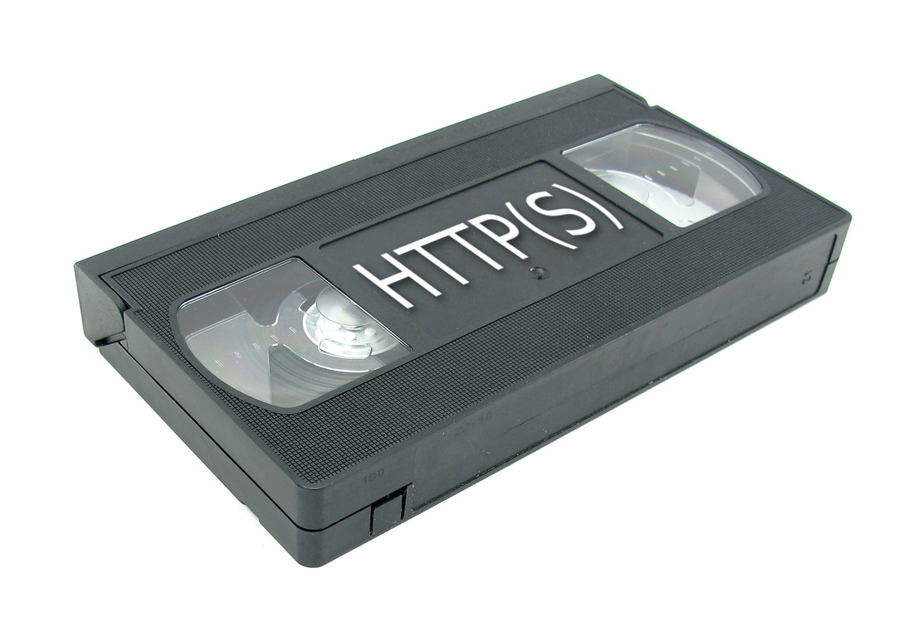

class: center, middle template: inverse # Using VCR  Ruby HTTP interaction recorder/player [github.com/vcr/vcr](https://github.com/vcr/vcr) --- <p class="center">  </p> # Agenda 1. What is VCR? 2. Why use VCR? 3. How to use VCR 4. Building a news reader with help from VCR. --- # What is VCR? A ruby gem that records and replays HTTP(S) interactions. ## Record mode * Monitors HTTP traffic * Records all interactions to a YAML "cassette" file * Ruby libraries can't tell the difference ## Playback mode * Intercepts HTTP traffic * Plays back data from cassette instead of real traffic * Ruby libraries can't tell the difference --- # Why use VCR? <p class="center"> </p> Most useful for testing * Speed up your tests * Make your tests deterministic (ie: less brittle) * Debug intermittent errors during HTTP interactions * Create erroneous interactions to test error handling Potentially other testing and non-testing uses (fake/stub API results, etc.) --- # How to use VCR Normal usage is very simple. Just wrap your code in `use_cassette`. ```ruby VCR.use_cassette("google") do Faraday.get("https://www.google.com/") end ``` `google.yml`: ```YAML --- http_interactions: - request: method: get uri: https://www.google.com/ body: encoding: US-ASCII string: '' headers: User-Agent: - Faraday v0.9.2 # ... ``` --- class: center, middle template: inverse # Building a News Reader With help from VCR --- # Building a News Reader ## Goals * Ability to run `ruby read_news.rb` and get top stories in the console * Support for [RubyFlow](http://www.rubyflow.com/) * Support for [New York Times](http://www.nytimes.com/) * ~~Support for Omaha.com~~ --- # Building a News Reader ## Tools * Ruby * VCR * Faraday * RSS * Nokogiri --- # Building a News Reader Explore the branches in [this repo](https://github.com/carlzulauf/news_vcr). Branches were developed in the following order * pre-vcr * fetcher-vcr * document-vcr * article-vcr * rubyflow * nytimes * master